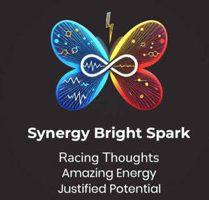
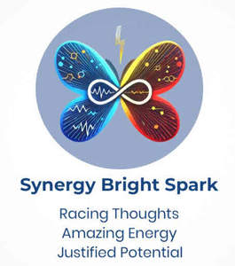

Trade Mark Journal No.2025/009 28 February 2025
UK00004160927 16 February 2025 (9,16,18,25,28,35,40,41,42,44)
Mark 1

Mark 2

- Class 9
- Downloadable posters; Downloadable educational course materials; Downloadable electronic books; Downloadable electronic publications in the nature of magazines; Downloadable electronic brochures; Downloadable series of children’s books; Downloadable electronic publications in the nature of magazines in the field of video games; Digital phones; Digital tablets; Digital notepads; Digital signs; Digital sensory devices; Digital books downloadable from the Internet; Wearable digital electronic communication devices; Digital organizers; Bags for cameras; Laptop bags; Cash cards [magnetic]; Holders for cell phones; Ring holders for mobile telephones; Lanyards for cell phones; Ring holders for cell phones; Selfie sticks used as smartphone accessories; Development kits.
- Class 16
- Clothing patterns; Adhesives for stationery or household use; Adhesives for stationery and household use; Gluten [glue] for stationery or household purposes; Plastic adhesives for stationery or household purposes; Adhesives for stationery or household purposes; Plastic food storage bags for household use; Coloring books for adults; Books; Non-fiction books; Fiction books; Series of non-fiction books; Comic books; Writing books; Books for children; Copy books; Printed books; Educational books; Fantasy books; Baby books [storybooks]; Religious books; Scrap books; Exercise books; Sticker books; School writing books; Activity books; Children's books; Writing or drawing books; Blank journal books; Bibs, sleeved, of paper; Holders for desk accessories; Desk baskets for desk accessories; Fingerprint kits; Arts and craft paint kits; Arts and crafts paint kits; Paint boxes and brushes.
- Class 18
- Fashion handbags; Bags for sports clothing; Holdalls for sports clothing; Wallets; Pocket wallets; Handbags, purses and wallets; Card wallets; Clutch purses [handbags]; Clutches [purses]; Purses [leatherware]; Tote bags; Handbags; Bags; Small purses; Change purses; Crossbody bags; Canvas bags; Handbags for men; Carry-on bags; Duffel bags; Cross-body bags; Carry-all bags; Multi-purpose purses; Hand bags; Backpacks; Bags (Game -) [hunting accessories]; Game bags [hunting accessories]; Straps for handbags; Kit bags.
- Class 25
- Fashion hats; Ready-to-wear clothing; Knitwear [clothing]; Clothing; Sportswear; Clothing for sports; Sports clothing; Athletic clothing; Casual clothing; Jackets being sports clothing; Parts of clothing, footwear and headgear; Menswear; Gloves for apparel; Sports garments; Men's clothing; Leisure clothing; Denims [clothing]; Jerseys [clothing]; Headbands [clothing]; Headbands for clothing; Clothing for leisure wear; Footwear; Dance clothing; Playsuits [clothing]; Foulards [clothing articles]; Leather clothing; Clothing of leather; Leather (Clothing of -); Cashmere clothing; Footwear for sports; Sports footwear; Jackets [clothing]; Casual footwear; Triathlon clothing; Clothing for cycling; Woolen clothing; Articles of sports clothing; Clothing for gymnastics; Bandeaux [clothing]; Corsets [clothing, foundation garments]; Garments for protecting clothing; Embroidered clothing; Clothing for wear in wrestling games; Furs [clothing]; Footwear for women; Clothes for sports; Clothing for skiing; Footwear for sport; Footwear for use in sport; Gabardines [clothing]; Sports clothing [other than golf gloves]; Shorts [clothing]; Capes (clothing); Party hats [clothing]; Athletic footwear; Knitted clothing; Silk clothing; Leisure footwear; Aprons [clothing]; Footwear for snowboarding; Maternity clothing; Layettes [clothing]; Clothing layettes; Quilted jackets [clothing]; Latex clothing; Footwear for men; Fishing clothing; Articles of clothing; Woven clothing; Athletics footwear; Ready-made clothing; Visors [clothing]; Clothes for sport; Sneakers [footwear]; Muffs [clothing]; Clothing for wear in judo practices; Women's clothing; Smart clothing; Articles of clothing for theatrical use; Rainproof clothing; Gloves [clothing]; Gloves as clothing; Waterproof clothing; Weatherproof clothing; Wristbands [clothing]; Hoodies; Sweatshirts; Hooded sweatshirts; T-shirts; Hooded sweat shirts; Shirts; Short-sleeved T-shirts; Turtleneck shirts; Hooded pullovers; Long-sleeved shirts; Beanies; Short-sleeve shirts; Camouflage shirts; Short-sleeved shirts; Tee-shirts; Fleece jackets; Corduroy shirts; Tracksuits; Sleeved jackets; V-neck sweaters; Shirts for suits; Collared shirts; Sweat shirts; Sleeveless jackets; Beanie hats; Sweaters; Sweatpants; Jackets; Fleece pullovers; Open-necked shirts; Knit shirts; Men's and women's jackets, coats, trousers, vests; Mock turtleneck shirts; Cardigans; Turtleneck pullovers; Yoga shirts; Denim jackets; Snowboard jackets; Balaclavas; Turtleneck sweaters; Sports shirts; Tank-tops; Hoods [clothing]; Camouflage jackets; Knit jackets; Casual shirts; Turtlenecks; Dress shirts; Pullovers; Sleeveless pullovers; Jackets (Stuff -) [clothing]; Stuff jackets [clothing]; Parkas; Bandanas; Anoraks [parkas]; Moisture-wicking sports shirts; Fleece shorts; Sweat jackets; Maternity shirts; Jumpers [sweaters]; Printed t-shirts; Sleeveless jerseys; Sport shirts; Overshirts; Hooded tops; Jumpers [pullovers]; Fleece vests; Polo shirts; Polar fleece jackets; Hunting shirts; Button-front aloha shirts; Soccer shirts; Trenchcoats; Gilets; Hooded bathrobes; Sleep shirts; Tracksuit tops; Scarves; Golf shirts; Sports shirts with short sleeves; Night shirts; Sheepskin jackets; Blouson jackets; Polo sweaters; Leggings [trousers]; Jumpsuits; Football shirts; Cowls [clothing]; Rugby shirts; Casual jackets; Woven shirts; Mock turtleneck sweaters; Windcheaters; Sweatsuits; Aloha shirts; Sports jackets; Fur coats and jackets; Tennis shirts; Fishing shirts; Bandanas [neckerchiefs]; Overcoats; Tops [clothing]; Fleece tops; Scarfs; Cashmere scarves; Stuff jackets; Bandannas; Fur jackets; Waistcoats [vests]; Hats; Tracksuit bottoms; Jeans; Windproof jackets; Pique shirts; Ramie shirts; Bomber jackets; Collars [clothing]; Toques [hats]; Under shirts; Blazers; Mufflers [clothing]; Bottoms [clothing]; Jerseys; Collars for dresses; Wind-resistant jackets; Padded jackets; Shirts and slips; Shirt fronts; American football shirts; Button down shirts; Blouses; Trousers shorts; Babies' pants [clothing]; Bib shorts; Shorts; Nightshirts; Paper hats for use as clothing items; Dress pants; Denim pants; Clothes; Pants; Boy shorts [underwear]; Blue jeans; Uniforms; Maternity shorts; Trousers; Golf shorts; Denim jeans; Combinations [clothing]; Belts for clothing; Replica football kits.
- Class 28
- Dolls' clothing accessories; Doll clothing; Clothing for dolls; Articles of clothing for toys; Fidget toys; Developmental toys; Toys; Toys, games, and playthings; Cuddly toys; Puzzles [toys]; Plush toys; Stuffed toys; Wind-up toys; Plastic toys; Scooters [toys]; Mobiles [toys]; Wooden toys; Model cars [toys or playthings]; Toy dolls; Educational toys; Outdoor toys; Toy playsets; Models being toys; Bath toys; Sandbox toys; Sand toys; Drones [toys]; Cloth toys; Musical toys; Toy figurines; Fluffy toys; Plastic toys for use in the bath; Stuffed animals [toys]; Fabric toys; Water toys; Plastic models being toys; Model toys; Play mats incorporating infant toys [playthings]; Toy prams; Children's toys; Smart toys; Push toys; Toy cars; Doll accessories; Accessories for dolls; Craft model kits; Kits of parts [sold complete] for constructing models; Toy model hobbycraft kits; Model plane kits; Craft toys sold in kit form; Kits of parts [sold complete] for making toy model cars.
- Class 35
- Retail services in relation to fashion accessories; Retail services connected with the sale of clothing and clothing accessories; Retail services in relation to clothing accessories; Dissemination of advertisements and of advertising material [flyers, brochures, leaflets and samples]; Distribution and dissemination of advertising materials [leaflets, prospectuses, printed material, samples]; Dissemination of advertising material [leaflets, brochures and printed matter]; Dissemination of advertising and promotional materials; Publication of publicity materials and texts; Distribution of flyers, brochures, printed matter and samples for advertising purposes; Promoting the sale of goods and services of others through the distribution of printed material and promotional contests; Dissemination of advertising material [leaflets, brochure and printed matter]; Preparing promotional and merchandising material for others; Subscriptions (arranging of) to books, reviews, newspapers or comic books; Rental of all publicity and marketing presentation materials; Advertising services relating to books; Promoting the sale of fashion goods through promotional articles in magazines; Distribution of publicity materials, namely, flyers, prospectuses, brochures, samples, particularly for catalogue long distance sales [whether crossborder or not]; Distribution of publicity materials (flyers, prospectuses, brochures, samples, particularly for catalogue long distance sales) whether cross border or not; Publication of publicity materials; Design of advertising materials; Publication of publicity materials on-line; Dissemination of advertising materials; Advertising in periodicals, brochures and newspapers; Distribution of advertising materials; Distribution of printed promotional material by post; Arranging advertising and promotional contracts for others; Distribution of promotional leaflets; Promotional advertising relating to philosophical instruction; Distribution of promotional material; Design of advertising brochures; Distribution of advertising, marketing and promotional material; Dissemination of advertising, marketing and publicity materials; Hiring of advertising materials; Street dissemination of advertising materials; Retail store services in the field of clothing; Online retail store services in relation to clothing; Online retail store services relating to clothing; Retail services in relation to confectionery; Retail services in relation to footwear; Retail services in relation to clothing; Retail services in relation to coffee; Retail services in relation to chocolate; Retail services in relation to toys; Online retail services relating to clothing; Retail services connected with stationery; Retail services relating to candy; Retail services relating to clothing; Retail of third-party pre-paid cards for the purchase of clothing; Retail services in relation to cookware; Retail services in relation to bags; Retail services in relation to metal hardware; Retail services in relation to headgear; Online retail services relating to toys; Retail services in relation to fabrics; Online retail services relating to handbags; Online retail services in relation to downloadable virtual clothing; Digital marketing; Digital advertising services; Retail services in relation to physical therapy equipment; Mail order retail services for clothing accessories.
- Class 40
- Customized printing of company names and logos for promotional and advertising purposes on the goods of others; Printing of books; Digital on-demand printing services of books and other documents; Clothing alterations [custom manufacture]; Digital printing; Printing of photographic images from digital media; Digital printing services; Printing of documents from digital media; T-shirt printing; T-shirt embroidering services; Tee-shirt embroidering services; Monogramming of clothes; Imprinting messages on tee-shirts; Custom imprinting of clothing with decorative designs.
- Class 41
- Publication of educational teaching materials; Publishing services for books and magazines; Health and wellness training; Health club services [health and fitness training]; Health and fitness club services; Education services relating to conservation of the environment; Educational services relating to spiritual development; Online digital publishing services; Digital video, audio and multimedia entertainment publishing services; Education services relating to therapeutic treatments; Publishing of books; Publishing of books, magazines; Publication of electronic books and journals online; On-line publication of electronic books and journals; Book publishing.
- Class 42
- Design and development of consumer products; Design of products; Clothing design services; Design services for clothing; Product design services; Brand design services; Digital watermarking; Design of clothing accessories; Design of clothing, footwear and headgear; Design of clothing; Design of fashion accessories; Design of protective clothing; Designing of clothing; Design of logos for t-shirts; Design and testing of new products; Packaging designs.
- Class 44
- Personality assessment services [mental health services]; Mental health services; Health assessment services; Psychological counseling services in the field of sports; Psychotherapy services; Personality testing [mental health services]; Medical health assessment services; Physical therapy services; Medical counseling services; Insomnia therapy services; Consulting services relating to health care; Occupational psychology services; Therapy services; Mental health screening services; Health counseling; Psychological assessment services; Health clinic services; Consultancy services relating to health care; Occupational therapy services; Chiropractic services for children; Health care consultancy services [medical]; Health spa services; Medical counselling services; Chiropractic services; Health care relating to relaxation therapy; Psychological diagnosis services; ADHD screening services; Providing mental health rehabilitation facilities; Health care relating to therapeutic massage; Dietetic counselling services [medical]; Holistic psychotherapy; Respite care services in the nature of nursing aid services; Development of individual physical rehabilitation programmes; Homeopathic clinical services; Advisory services relating to health care; Health counselling; Meditation services; Individual medical counseling services provided to patients; Personal therapeutic services relating to circulatory improvement; Autogenic therapy services; Medical evaluation services; Beauty therapy services; Health clinic services [medical]; Health screening services in the field of asthma; Provision of health care services; Psychiatric services; Music therapy services; Health care; Health care in the nature of health maintenance organizations; Public health counseling; Health centres; Health screening services; Medical care services; Attention Deficit Hyperactivity Disorder screening services; Counselling relating to the psychological treatment of medical ailments; Medical advice for individuals with disabilities; Occupational therapy; Occupational therapy and rehabilitation; Therapeutic treatment of the body; Massage and therapeutic shiatsu massage; Massage.
Rajiv Thukral